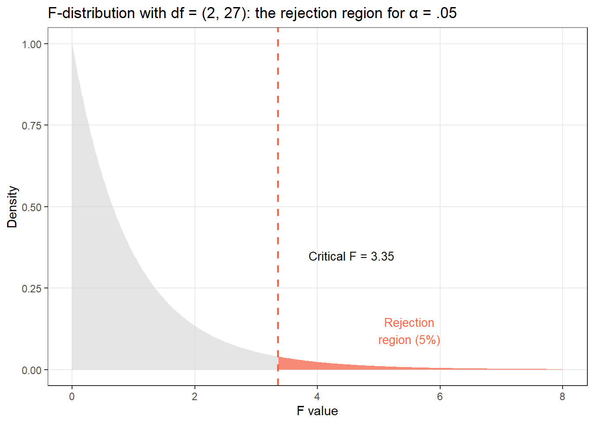
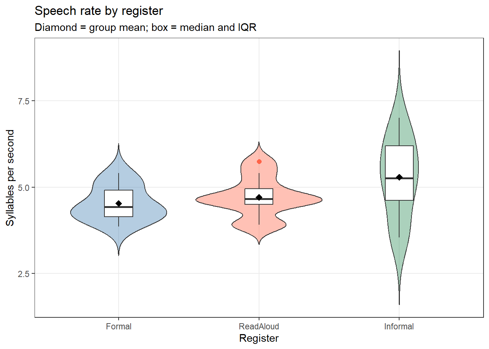
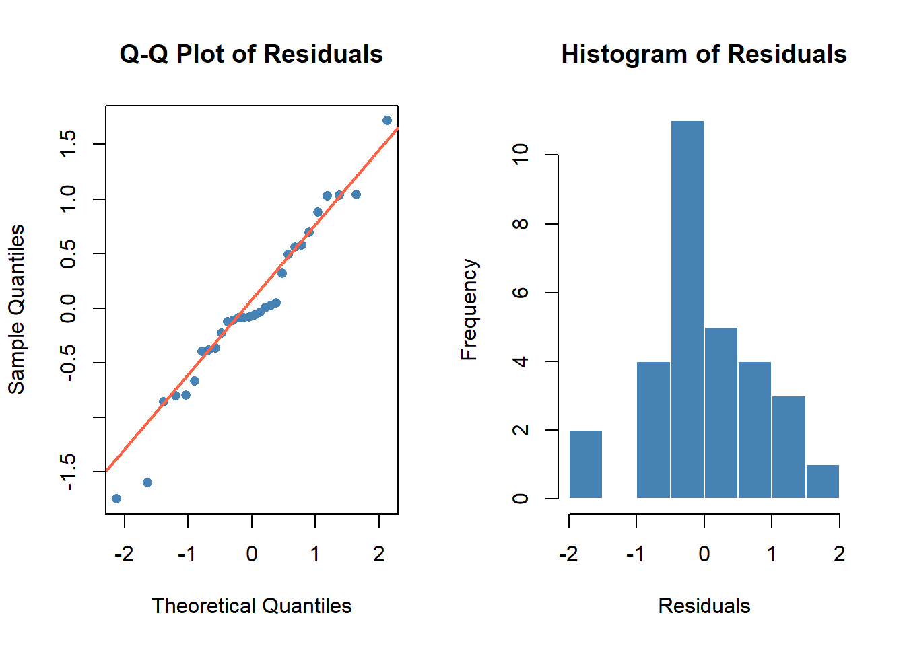
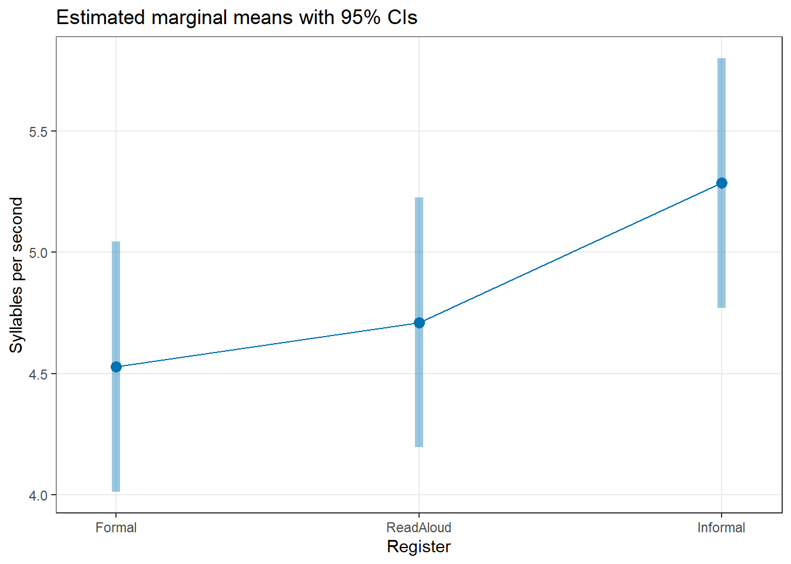
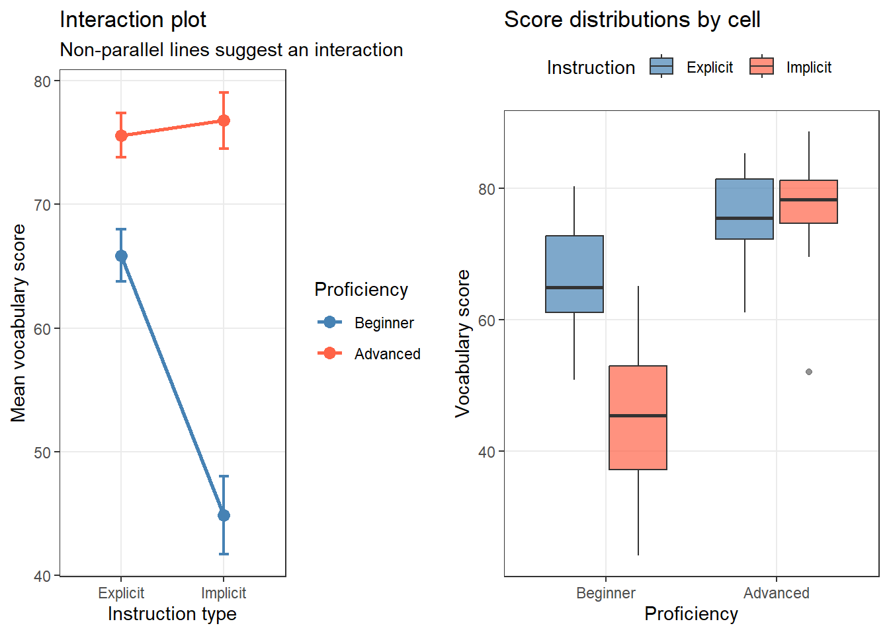
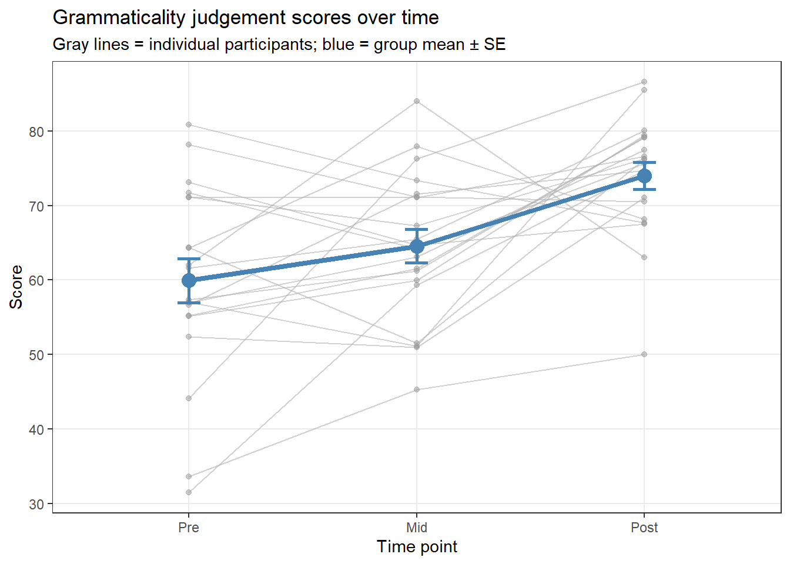
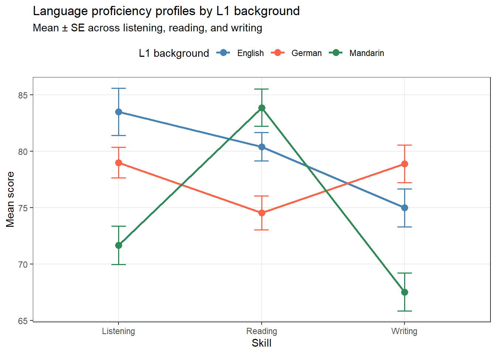
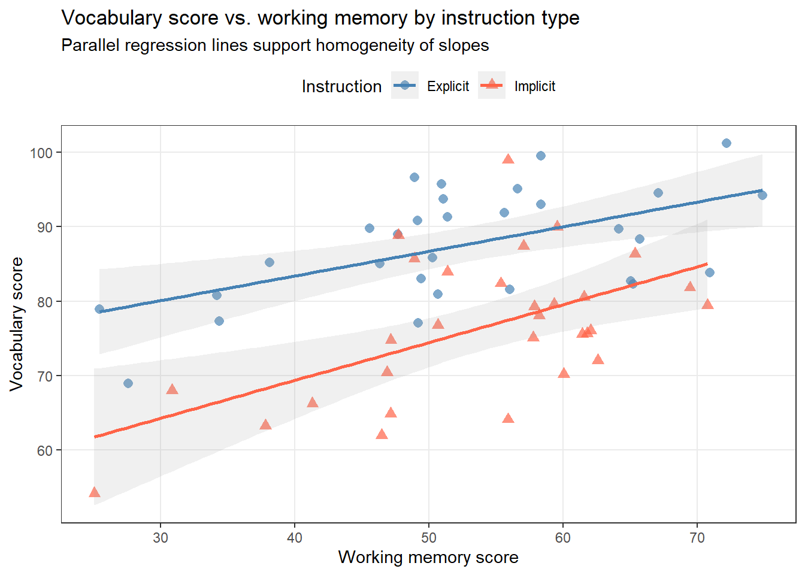

This tutorial introduces three closely related statistical methods for analysing differences between groups: ANOVA (Analysis of Variance), MANOVA (Multivariate Analysis of Variance), and ANCOVA (Analysis of Covariance). All three extend the logic of the t-test — which compares two group means — to more complex research designs involving multiple groups, multiple outcome variables, or the need to control for additional variables.
These methods are widely used across linguistics and the language sciences. A researcher comparing speech rate across three registers, examining whether listening proficiency and reading proficiency differ across language backgrounds, or testing whether vocabulary size differences between groups persist after controlling for age, would reach for ANOVA, MANOVA, or ANCOVA respectively.
This tutorial is aimed at beginners and intermediate R users. Each method is introduced conceptually before its implementation in R is demonstrated, with worked linguistic examples throughout. The tutorial integrates theory and practice so that you can understand why you are running each analysis, not just how.
Prerequisite Tutorials
Before working through this tutorial, we recommend familiarity with the following:
Repeated measures ANOVA — within-subjects designs; sphericity; the Greenhouse-Geisser correction
MANOVA — multiple dependent variables; Pillai’s trace and other multivariate statistics; follow-up ANOVAs
ANCOVA — controlling for a covariate; adjusted means; homogeneity of regression slopes
Effect sizes and power — η², partial η², ω², Cohen’s f; what they mean and how to report them
Reporting standards — model paragraphs, tables, and APA conventions
Citation
Martin Schweinberger. 2026. ANOVA, MANOVA, and ANCOVA using R. The Language Technology and Data Analysis Laboratory (LADAL), The University of Queensland, Australia. url: https://ladal.edu.au/tutorials/anova/anova.html (Version 3.1.1). doi: 10.5281/zenodo.19329144.
Preparation and Session Set-up
Install the required packages if you have not done so already (run once only):
library(dplyr) # data processing library(ggplot2) # data visualisation library(tidyr) # data reshaping library(flextable) # formatted tables library(effectsize) # effect size measures library(report) # automated result summaries library(emmeans) # estimated marginal means and contrasts library(car) # Levene's test and Type III sums of squares library(ggpubr) # publication-ready plots library(rstatix) # pipe-friendly statistical tests library(broom) # tidy model output library(cowplot) # multi-panel plots library(psych) # descriptive summaries library(checkdown) # interactive exercises options(stringsAsFactors =FALSE) options("scipen"=100, "digits"=12) set.seed(42)
The Logic of ANOVA
Section Overview
What you’ll learn: Why Analysis of Variance is the right tool for comparing means; how the F-ratio works; why ANOVA is preferable to multiple t-tests
Key concepts: Between-group variance, within-group variance, F-ratio, Type I error inflation
Why Not Just Run Multiple t-tests?
Imagine you want to compare reading speed across three groups of language learners: beginners, intermediate learners, and advanced learners. One instinct is to run three separate t-tests: beginners vs. intermediate, beginners vs. advanced, and intermediate vs. advanced.
The problem with this approach is Type I error inflation. Each t-test has a 5% probability of falsely rejecting the null hypothesis (given α = .05). When you run three tests simultaneously, the probability of making at least one false rejection is no longer 5% — it is:
\[P(\text{at least one false rejection}) = 1 - (1 - \alpha)^k = 1 - (0.95)^3 = .143\]
With three comparisons, the family-wise error rate has already climbed to 14.3%. With ten comparisons it would exceed 40%. ANOVA solves this problem by testing all groups simultaneously in a single test, keeping the family-wise error rate at α = .05.
Partitioning Variance
The key insight of ANOVA is that total variability in the data can be partitioned into two components:
\(SS_{\text{between}}\) (also called \(SS_{\text{model}}\) or \(SS_{\text{treatment}}\)) captures how much the group means differ from the grand mean — the variability explained by group membership
\(SS_{\text{within}}\) (also called \(SS_{\text{error}}\) or \(SS_{\text{residual}}\)) captures how much individual scores vary around their group mean — unexplained variability
These sums of squares are converted to mean squares by dividing by their degrees of freedom:
where \(k\) is the number of groups and \(N\) is the total number of observations.
The F-Ratio
The F-ratio is the test statistic for ANOVA:
\[F = \frac{MS_{\text{between}}}{MS_{\text{within}}} = \frac{\text{Variance explained by group membership}}{\text{Unexplained variance (noise)}}\]
Under the null hypothesis (all group means are equal), \(MS_{\text{between}}\) and \(MS_{\text{within}}\) should estimate the same population variance, so F ≈ 1. When the null hypothesis is false and group means genuinely differ, \(MS_{\text{between}}\) will be larger than \(MS_{\text{within}}\), producing F > 1.
The larger the F-ratio, the more evidence against H₀. The significance of F is assessed against the F-distribution with degrees of freedom \((k-1, N-k)\).

Intuition for the F-ratio
Think of F as a signal-to-noise ratio. The numerator is the signal: how much do the group means differ? The denominator is the noise: how much do individuals within groups vary? A large F means the signal is much stronger than the noise — strong evidence that the groups differ.
If F = 1, the group differences are no larger than random variation within groups — no evidence of a real effect.
Exercises: The Logic of ANOVA
Q1. Why is it problematic to run multiple t-tests instead of ANOVA when comparing three or more groups?
Q2. An ANOVA returns F(3, 76) = 0.87. What does this suggest?
One-Way ANOVA
Section Overview
What you’ll learn: How to test whether three or more group means differ significantly; how to check assumptions; how to identify which groups differ using post-hoc tests
A one-way ANOVA tests whether the means of a numeric dependent variable differ across three or more levels of a single categorical independent variable (factor).
\[H_0: \mu_1 = \mu_2 = \cdots = \mu_k \quad \text{(all group means are equal)}\] \[H_1: \text{At least one group mean differs from the others}\]
Assumptions
Before fitting a one-way ANOVA, the following assumptions should be verified:
Assumption
How to check
Independence of observations
Research design (each participant in one group only)
Normality of residuals within each group
Q-Q plots; Shapiro-Wilk test
Homogeneity of variances (homoskedasticity)
Levene’s test; boxplots
No extreme outliers
Boxplots; z-scores
ANOVA is relatively robust to mild violations of normality, especially with balanced designs (equal group sizes) and moderate-to-large sample sizes (n ≥ 15 per group). It is more sensitive to violations of homogeneity of variances, particularly with unequal group sizes.
Worked Example: Speech Rate Across Three Registers
Research question: Do speakers produce syllables at different rates in formal speech, informal conversation, and read-aloud tasks?
We simulate a dataset of syllables-per-second for 30 speakers (10 per register):
Always start with a descriptive summary before running inferential tests:
Code
speech_rate |> dplyr::group_by(Register) |> dplyr::summarise( n =n(), M =round(mean(SyllablesPS), 2), SD =round(sd(SyllablesPS), 2), Mdn =round(median(SyllablesPS), 2), Min =round(min(SyllablesPS), 2), Max =round(max(SyllablesPS), 2) ) |>flextable() |> flextable::set_table_properties(width = .85, layout ="autofit") |> flextable::theme_zebra() |> flextable::fontsize(size =12) |> flextable::fontsize(size =12, part ="header") |> flextable::align_text_col(align ="center") |> flextable::set_caption(caption ="Descriptive statistics: speech rate (syllables/second) by register.") |> flextable::border_outer()
Register
n
M
SD
Mdn
Min
Max
Formal
10
4.53
0.50
4.43
3.86
5.41
ReadAloud
10
4.71
0.58
4.66
3.91
5.75
Informal
10
5.29
1.14
5.26
3.54
7.00
Step 2: Visualise the Data
Code
ggplot(speech_rate, aes(x = Register, y = SyllablesPS, fill = Register)) +geom_violin(alpha =0.4, trim =FALSE) +geom_boxplot(width =0.2, fill ="white", outlier.color ="tomato", outlier.size =2) +stat_summary(fun = mean, geom ="point", shape =18, size =3, color ="black") +scale_fill_manual(values =c("steelblue", "tomato", "seagreen")) +theme_bw() +theme(legend.position ="none", panel.grid.minor =element_blank()) +labs(title ="Speech rate by register", subtitle ="Diamond = group mean; box = median and IQR", x ="Register", y ="Syllables per second")

Step 3: Check Assumptions
Normality of residuals
Fit the model first, then inspect residuals:
Code
anova_model <-aov(SyllablesPS ~ Register, data = speech_rate) # Q-Q plot of residuals par(mfrow =c(1, 2)) qqnorm(residuals(anova_model), main ="Q-Q Plot of Residuals", pch =16, col ="steelblue") qqline(residuals(anova_model), col ="tomato", lwd =2) hist(residuals(anova_model), breaks =10, main ="Histogram of Residuals", xlab ="Residuals", col ="steelblue", border ="white")

Code
par(mfrow =c(1, 1))
Code
# Shapiro-Wilk test on residuals shapiro.test(residuals(anova_model))
Shapiro-Wilk normality test
data: residuals(anova_model)
W = 0.9699069501, p-value = 0.536631966
Homogeneity of variances (Levene’s test):
Code
car::leveneTest(SyllablesPS ~ Register, data = speech_rate)
Levene's Test for Homogeneity of Variance (center = median)
Df F value Pr(>F)
group 2 3.22011 0.05569 .
27
---
Signif. codes: 0 '***' 0.001 '**' 0.01 '*' 0.05 '.' 0.1 ' ' 1
What If Assumptions Are Violated?
Non-normal residuals with sufficient sample size (n ≥ 15 per group): ANOVA is robust; proceed with caution and report the violation
Non-normal residuals with small samples: use the Kruskal-Wallis test (non-parametric alternative)
Unequal variances: use Welch’s ANOVA — oneway.test(y ~ group, var.equal = FALSE) — which does not assume homoskedasticity
Step 4: Fit and Interpret the ANOVA
Code
summary(anova_model)
Df Sum Sq Mean Sq F value Pr(>F)
Register 2 3.12293226 1.561466128 2.48088 0.10254
Residuals 27 16.99382771 0.629401026
The ANOVA table shows:
Df: degrees of freedom for the effect (k − 1 = 2) and error (N − k = 27)
Sum Sq: sum of squares (SS) for each source of variance
Mean Sq: mean square = Sum Sq / Df
F value: the F-ratio = MS_between / MS_within
Pr(>F): the p-value
Step 5: Effect Size
A significant F-ratio tells us that group means differ, but not how much they differ. We need an effect size.
Eta-squared (η²) is the proportion of total variance explained by the factor:
# Effect Size for ANOVA (Type I)
Parameter | Omega2 | 95% CI
---------------------------------
Register | 0.09 | [0.00, 1.00]
- One-sided CIs: upper bound fixed at [1.00].
Statistic
Small
Medium
Large
Notes
η² (eta-squared)
.01
.06
.14
Biased upward; overestimates in small samples
ω² (omega-squared)
.01
.06
.14
Less biased; preferred for reporting
Step 6: Post-Hoc Tests
A significant one-way ANOVA tells us that at least one group mean differs — but not which pairs differ. Post-hoc tests perform all pairwise comparisons while controlling the family-wise error rate.
Choosing a Post-Hoc Test
Test
When to use
Tukey HSD
Equal or near-equal sample sizes; most common choice
Bonferroni
Conservative; best when you have few planned comparisons
Games-Howell
Unequal variances (heteroskedasticity)
Scheffé
Complex contrasts involving combinations of groups
For most linguistic research with balanced designs, Tukey HSD is the standard choice.
Tukey HSD via base R:
Code
TukeyHSD(anova_model)
Tukey multiple comparisons of means
95% family-wise confidence level
Fit: aov(formula = SyllablesPS ~ Register, data = speech_rate)
$Register
diff lwr upr p adj
ReadAloud-Formal 0.182582172419 -0.697105318852 1.06226966369 0.864904394603
Informal-Formal 0.757202229708 -0.122485261563 1.63688972098 0.101712887808
Informal-ReadAloud 0.574620057289 -0.305067433982 1.45430754856 0.254862891479
Estimated marginal means and pairwise contrasts via emmeans (more flexible, works with complex designs):
# Pairwise contrasts with Tukey adjustment pairs(emm, adjust ="tukey")
contrast estimate SE df t.ratio p.value
Formal - ReadAloud -0.183 0.355 27 -0.515 0.8649
Formal - Informal -0.757 0.355 27 -2.134 0.1017
ReadAloud - Informal -0.575 0.355 27 -1.620 0.2549
P value adjustment: tukey method for comparing a family of 3 estimates
Visualise the pairwise comparisons:
Code
emmeans::emmip(anova_model, ~ Register, CIs =TRUE, style ="factor") +theme_bw() +theme(panel.grid.minor =element_blank()) +labs(title ="Estimated marginal means with 95% CIs", y ="Syllables per second", x ="Register")

Reporting: One-Way ANOVA
A one-way ANOVA was conducted to examine whether speech rate (syllables per second) differed across three register types (Formal, Read Aloud, Informal). Levene’s test confirmed homogeneity of variances (p > .05), and residuals were approximately normal (Shapiro-Wilk: p > .05). The ANOVA revealed a significant main effect of Register (F(2, 27) = X.XX, p = .XXX, ω² = .XX). Post-hoc Tukey HSD comparisons showed that informal speech was significantly faster than formal speech (p = .XXX) and read-aloud speech (p = .XXX), while formal and read-aloud rates did not differ significantly (p = .XXX).
Exercises: One-Way ANOVA
Q1. A one-way ANOVA returns F(4, 95) = 2.87, p = .027. What can you conclude?
Q2. Levene’s test returns p = .003 for a one-way ANOVA with unequal group sizes. What should you do?
Q3. Why is it important to report ω² rather than η² for ANOVA effect sizes in small samples?
Two-Way ANOVA
Section Overview
What you’ll learn: How to test the effects of two categorical factors simultaneously; what interaction effects are and how to interpret them; how to visualise factorial designs
Key concepts: Main effects, interaction effects, factorial design, interaction plot
A two-way ANOVA (also called a factorial ANOVA) examines the effects of two categorical independent variables (factors) on a numeric dependent variable. It partitions variance into three components:
Main effect of A: Does the dependent variable differ across levels of factor A, averaging across all levels of factor B?
Main effect of B: Does the dependent variable differ across levels of factor B, averaging across all levels of factor A?
Interaction effect A×B: Does the effect of factor A on the dependent variable depend on the level of factor B?
Interaction Effects Take Priority
Always examine the interaction term first. If the interaction is significant, the main effects cannot be interpreted independently — the effect of one factor depends on the level of the other. In this case, interpret the simple effects (the effect of factor A at each level of factor B) rather than main effects.
Worked Example: Vocabulary Score by Proficiency and Instruction Type
Research question: Do vocabulary test scores differ by learner proficiency level (Beginner, Advanced) and instruction type (Explicit, Implicit), and do these two factors interact?
Code
set.seed(42) n <-15# per cell vocab_data <-data.frame( Proficiency =rep(c("Beginner", "Advanced"), each = n *2), Instruction =rep(rep(c("Explicit", "Implicit"), each = n), 2), Score =c( # Beginners: explicit instruction helps a lot; implicit less so rnorm(n, mean =62, sd =8), # Beginner × Explicit rnorm(n, mean =48, sd =9), # Beginner × Implicit # Advanced: explicit and implicit both work well rnorm(n, mean =78, sd =7), # Advanced × Explicit rnorm(n, mean =76, sd =8) # Advanced × Implicit ) ) |> dplyr::mutate( Proficiency =factor(Proficiency, levels =c("Beginner", "Advanced")), Instruction =factor(Instruction, levels =c("Explicit", "Implicit")) )
Descriptive Statistics
Code
vocab_data |> dplyr::group_by(Proficiency, Instruction) |> dplyr::summarise( n =n(), M =round(mean(Score), 2), SD =round(sd(Score), 2), .groups ="drop" ) |>flextable() |> flextable::set_table_properties(width = .75, layout ="autofit") |> flextable::theme_zebra() |> flextable::fontsize(size =12) |> flextable::fontsize(size =12, part ="header") |> flextable::align_text_col(align ="center") |> flextable::set_caption(caption ="Vocabulary scores (M, SD) by proficiency and instruction type.") |> flextable::border_outer()
Proficiency
Instruction
n
M
SD
Beginner
Explicit
15
65.87
8.20
Beginner
Implicit
15
44.88
12.21
Advanced
Explicit
15
75.61
6.98
Advanced
Implicit
15
76.79
8.71
Visualise the Interaction
The interaction plot is the most informative visualisation for a factorial design. Parallel lines indicate no interaction; non-parallel (crossing or diverging) lines suggest an interaction.
Code
# Summary for plotting twa_summary <- vocab_data |> dplyr::group_by(Proficiency, Instruction) |> dplyr::summarise( M =mean(Score), SE =sd(Score) /sqrt(n()), .groups ="drop" ) p1 <-ggplot(twa_summary, aes(x = Instruction, y = M, color = Proficiency, group = Proficiency)) +geom_line(linewidth =1) +geom_point(size =3) +geom_errorbar(aes(ymin = M - SE, ymax = M + SE), width =0.1, linewidth =0.8) +scale_color_manual(values =c("steelblue", "tomato")) +theme_bw() +theme(panel.grid.minor =element_blank()) +labs(title ="Interaction plot", subtitle ="Non-parallel lines suggest an interaction", x ="Instruction type", y ="Mean vocabulary score", color ="Proficiency") p2 <-ggplot(vocab_data, aes(x = Proficiency, y = Score, fill = Instruction)) +geom_boxplot(alpha =0.7, outlier.color ="gray40") +scale_fill_manual(values =c("steelblue", "tomato")) +theme_bw() +theme(panel.grid.minor =element_blank(), legend.position ="top") +labs(title ="Score distributions by cell", x ="Proficiency", y ="Vocabulary score", fill ="Instruction") cowplot::plot_grid(p1, p2, ncol =2)

The interaction plot shows that explicit instruction benefits beginners much more than implicit instruction, while advanced learners perform similarly under both conditions. This suggests an interaction.
Check Assumptions
Code
twa_model <-aov(Score ~ Proficiency * Instruction, data = vocab_data) # Levene's test car::leveneTest(Score ~ Proficiency * Instruction, data = vocab_data)
Levene's Test for Homogeneity of Variance (center = median)
Df F value Pr(>F)
group 3 1.12493 0.34682
56
Code
# Normality of residuals shapiro.test(residuals(twa_model))
Shapiro-Wilk normality test
data: residuals(twa_model)
W = 0.9832107045, p-value = 0.57811886
Because the interaction is significant, we focus on simple effects — the effect of Instruction within each level of Proficiency — rather than interpreting main effects in isolation.
Effect Sizes
For factorial designs, partial η² is reported instead of (total) η². Partial η² measures the proportion of variance explained by one effect after accounting for all other effects:
The simple effects analysis reveals that explicit instruction produces significantly higher scores than implicit instruction for beginners, but not for advanced learners — confirming the interaction.
Reporting: Two-Way ANOVA
A 2 × 2 factorial ANOVA examined the effects of proficiency level (Beginner, Advanced) and instruction type (Explicit, Implicit) on vocabulary scores. Levene’s test confirmed homogeneity of variances (F(3, 56) = X.XX, p > .05). There was a significant main effect of Proficiency (F(1, 56) = X.XX, p < .001, partial η² = .XX) and a significant Proficiency × Instruction interaction (F(1, 56) = X.XX, p = .XXX, partial η² = .XX). The main effect of Instruction was not significant (F(1, 56) = X.XX, p = .XXX). Simple effects analysis showed that explicit instruction produced significantly higher scores than implicit instruction for beginners (p < .001) but not for advanced learners (p = .XXX).
Exercises: Two-Way ANOVA
Q1. In a two-way ANOVA, the interaction term is significant. What should you do first?
Q2. An interaction plot shows two perfectly parallel lines. What does this indicate?
Repeated Measures ANOVA
Section Overview
What you’ll learn: How to analyse designs where the same participants are measured across multiple conditions or time points; the sphericity assumption and its corrections
Key functions:aov() with Error(), rstatix::anova_test(), emmeans()
A repeated measures ANOVA (also called a within-subjects ANOVA) is used when the same participants are measured under three or more conditions. Because measurements come from the same individuals, they are correlated — the repeated measures design removes between-subject variability, increasing statistical power.
The Sphericity Assumption
Repeated measures ANOVA requires an additional assumption not needed in independent ANOVA: sphericity. Sphericity requires that the variances of the differences between all pairs of conditions are equal.
Sphericity is tested using Mauchly’s test:
- p > .05: sphericity is not violated — proceed normally
- p ≤ .05: sphericity is violated — apply a correction to the degrees of freedom
The most common correction is the Greenhouse-Geisser correction (ε̂), which reduces the degrees of freedom to account for the violation. A more liberal alternative is the Huynh-Feldt correction. When sphericity is severely violated (ε̂ < .75), the Greenhouse-Geisser correction is preferred.
Worked Example: Grammaticality Judgements Across Three Time Points
Research question: Do grammaticality judgement scores change over three testing sessions (pre-instruction, mid-instruction, post-instruction)?
Code
set.seed(42) n_participants <-20rm_data <-data.frame( Participant =factor(rep(1:n_participants, 3)), Time =factor(rep(c("Pre", "Mid", "Post"), each = n_participants), levels =c("Pre", "Mid", "Post")), Score =c( rnorm(n_participants, mean =58, sd =10), # Pre rnorm(n_participants, mean =67, sd =9), # Mid rnorm(n_participants, mean =74, sd =8) # Post ) )
Descriptive Statistics and Visualisation
Code
rm_data |> dplyr::group_by(Time) |> dplyr::summarise( n =n(), M =round(mean(Score), 2), SD =round(sd(Score), 2), .groups ="drop" ) |>flextable() |> flextable::set_table_properties(width = .6, layout ="autofit") |> flextable::theme_zebra() |> flextable::fontsize(size =12) |> flextable::fontsize(size =12, part ="header") |> flextable::align_text_col(align ="center") |> flextable::set_caption(caption ="Grammaticality judgement scores across three time points.") |> flextable::border_outer()
Time
n
M
SD
Pre
20
59.92
13.13
Mid
20
64.56
9.99
Post
20
73.99
8.19
Code
# Individual trajectories + group mean rm_summary <- rm_data |> dplyr::group_by(Time) |> dplyr::summarise(M =mean(Score), SE =sd(Score)/sqrt(n()), .groups ="drop") ggplot(rm_data, aes(x = Time, y = Score, group = Participant)) +geom_line(color ="gray70", alpha =0.6, linewidth =0.5) +geom_point(color ="gray60", alpha =0.5, size =1.5) +geom_line(data = rm_summary, aes(x = Time, y = M, group =1), color ="steelblue", linewidth =1.5, inherit.aes =FALSE) +geom_point(data = rm_summary, aes(x = Time, y = M), color ="steelblue", size =4, inherit.aes =FALSE) +geom_errorbar(data = rm_summary, aes(x = Time, ymin = M - SE, ymax = M + SE), width =0.1, color ="steelblue", linewidth =1, inherit.aes =FALSE) +theme_bw() +theme(panel.grid.minor =element_blank()) +labs(title ="Grammaticality judgement scores over time", subtitle ="Gray lines = individual participants; blue = group mean ± SE", x ="Time point", y ="Score")

Fit the Repeated Measures ANOVA
In base R, repeated measures ANOVA is specified using an Error() term:
Code
rm_model <-aov(Score ~ Time +Error(Participant/Time), data = rm_data) summary(rm_model)
Error: Participant
Df Sum Sq Mean Sq F value Pr(>F)
Residuals 19 2973.10678 156.479304
Error: Participant:Time
Df Sum Sq Mean Sq F value Pr(>F)
Time 2 2057.11086 1028.555429 11.26567 0.00014397 ***
Residuals 38 3469.39797 91.299946
---
Signif. codes: 0 '***' 0.001 '**' 0.01 '*' 0.05 '.' 0.1 ' ' 1
The rstatix package provides a more convenient interface that also performs Mauchly’s test and applies corrections automatically:
Code
rm_data |> rstatix::anova_test( dv = Score, wid = Participant, within = Time )
ANOVA Table (type III tests)
$ANOVA
Effect DFn DFd F p p<.05 ges
1 Time 2 38 11.266 0.000144 * 0.242
$`Mauchly's Test for Sphericity`
Effect W p p<.05
1 Time 0.932 0.533
$`Sphericity Corrections`
Effect GGe DF[GG] p[GG] p[GG]<.05 HFe DF[HF] p[HF]
1 Time 0.937 1.87, 35.59 0.000213 * 1.035 2.07, 39.35 0.000144
p[HF]<.05
1 *
The output includes:
- F: the F-statistic
- p: the p-value (uncorrected)
- p<.05: significance indicator
- ges: generalised eta-squared (the recommended effect size for repeated measures designs)
- Mauchly’s W and p for the sphericity test
- GGe: the Greenhouse-Geisser epsilon (ε̂)
- p[GG]: the Greenhouse-Geisser corrected p-value
contrast estimate SE df t.ratio p.value
Pre - Mid -4.64 3.02 38 -1.536 0.3983
Pre - Post -14.07 3.02 38 -4.658 0.0001
Mid - Post -9.43 3.02 38 -3.121 0.0103
P value adjustment: bonferroni method for 3 tests
Reporting: Repeated Measures ANOVA
A one-way repeated measures ANOVA examined whether grammaticality judgement scores changed across three time points (Pre, Mid, Post). Mauchly’s test indicated that [sphericity was/was not] violated (W = X.XX, p = .XXX). [If violated: The Greenhouse-Geisser correction was therefore applied (ε̂ = X.XX).] The ANOVA revealed a significant main effect of Time (F(X.XX, X.XX) = X.XX, p < .001, generalised η² = .XX). Bonferroni-corrected pairwise comparisons showed that scores increased significantly from Pre to Mid (p = .XXX) and from Mid to Post (p = .XXX).
Exercises: Repeated Measures ANOVA
Q1. What is the sphericity assumption in repeated measures ANOVA, and why does it matter?
Q2. Mauchly’s test returns W = 0.71, p = .003 for a 4-level repeated measures factor. What should you report?
MANOVA
Section Overview
What you’ll learn: When and why to use multiple dependent variables simultaneously; how MANOVA protects against inflated error rates across multiple outcomes; how to interpret multivariate test statistics and follow up with univariate ANOVAs
Key concepts: Multivariate test statistics (Pillai’s trace, Wilks’ λ, Hotelling’s T², Roy’s largest root); discriminant functions
Key functions:manova(), summary(), summary.aov()
MANOVA (Multivariate Analysis of Variance) extends ANOVA to designs with two or more dependent variables. Instead of testing group differences on each outcome separately (which would again inflate Type I error), MANOVA tests all outcomes simultaneously within a single multivariate framework.
When to Use MANOVA
Use MANOVA when:
You have two or more correlated dependent variables measured on the same participants
You want to understand whether groups differ across a profile of outcomes considered together
You want to control the overall Type I error rate across multiple outcomes
Do not use MANOVA simply because you have multiple outcomes — if the outcomes are theoretically unrelated, separate ANOVAs with an appropriate correction (e.g., Bonferroni) may be more interpretable.
The Multivariate Test Statistics
MANOVA produces several test statistics, each with slightly different properties:
Statistic
Formula_logic
Robustness
Recommendation
Pillai's trace
Sum of explained variance in each discriminant dimension
Most robust; recommended when assumptions may be violated
Preferred for most applications
Wilks' λ
Product of (1 − explained variance) across dimensions
Traditional default; performs well when assumptions are met
Report alongside Pillai when assumptions met
Hotelling's trace
Sum of explained/unexplained variance ratios
Sensitive to non-normality
Rarely preferred
Roy's largest root
Variance on the first (largest) discriminant dimension only
Powerful but anti-conservative; only valid if one discriminant function dominates
Use with caution
Which Test Statistic to Report?
Pillai’s trace is the most robust to violations of multivariate normality and homogeneity of covariance matrices, and is the recommended default for most linguistic research. When the assumptions are well met and you have one dominant discriminant function, Wilks’ λ is a reasonable alternative.
Assumptions of MANOVA
MANOVA extends the ANOVA assumptions to the multivariate case:
Assumption
How to check
Multivariate normality
Q-Q plots per group per variable; Mardia’s test (rstatix::mshapiro_test())
Homogeneity of covariance matrices
Box’s M test (rstatix::box_m()) — note: very sensitive, treat cautiously
Independence of observations
Research design
No extreme multivariate outliers
Mahalanobis distance
No multicollinearity between DVs
Correlation matrix; if r > .90, consider combining or dropping variables
Worked Example: Language Proficiency Profiles Across Three L1 Backgrounds
Research question: Do speakers from three different L1 backgrounds (English, Mandarin, German) differ in their overall language proficiency profile, as measured by listening score, reading score, and writing score?
Code
set.seed(42) n_per <-25manova_data <-data.frame( L1_Background =factor(rep(c("English", "Mandarin", "German"), each = n_per)), Listening =c( rnorm(n_per, mean =82, sd =8), rnorm(n_per, mean =74, sd =9), rnorm(n_per, mean =78, sd =7) ), Reading =c( rnorm(n_per, mean =80, sd =7), rnorm(n_per, mean =85, sd =8), rnorm(n_per, mean =76, sd =9) ), Writing =c( rnorm(n_per, mean =75, sd =9), rnorm(n_per, mean =68, sd =10), rnorm(n_per, mean =80, sd =8) ) )
manova_data |> tidyr::pivot_longer(cols =c(Listening, Reading, Writing), names_to ="Skill", values_to ="Score") |> dplyr::group_by(L1_Background, Skill) |> dplyr::summarise(M =mean(Score), SE =sd(Score)/sqrt(n()), .groups ="drop") |>ggplot(aes(x = Skill, y = M, color = L1_Background, group = L1_Background)) +geom_line(linewidth =1) +geom_point(size =3) +geom_errorbar(aes(ymin = M - SE, ymax = M + SE), width =0.1, linewidth =0.7) +scale_color_manual(values =c("steelblue", "tomato", "seagreen")) +theme_bw() +theme(panel.grid.minor =element_blank(), legend.position ="top") +labs(title ="Language proficiency profiles by L1 background", subtitle ="Mean ± SE across listening, reading, and writing", x ="Skill", y ="Mean score", color ="L1 background")

The diverging profile lines suggest that the groups differ not just in overall proficiency but in their pattern of skill strengths — exactly the kind of question MANOVA is designed to answer.
Check Assumptions
Code
# Multivariate normality per group (Shapiro-Wilk on each variable within each group)manova_data |> tidyr::pivot_longer(cols =c(Listening, Reading, Writing),names_to ="Skill", values_to ="Score") |> dplyr::group_by(L1_Background, Skill) |> dplyr::summarise(W =shapiro.test(Score)$statistic,p =shapiro.test(Score)$p.value,.groups ="drop" )
# A tibble: 9 × 4
L1_Background Skill W p
<fct> <chr> <dbl> <dbl>
1 English Listening 0.950 0.249
2 English Reading 0.945 0.193
3 English Writing 0.979 0.857
4 German Listening 0.907 0.0265
5 German Reading 0.958 0.370
6 German Writing 0.957 0.351
7 Mandarin Listening 0.972 0.687
8 Mandarin Reading 0.920 0.0518
9 Mandarin Writing 0.956 0.341
Box’s M test is extremely sensitive — with moderate sample sizes it almost always rejects the null hypothesis of equal covariance matrices even when the violation is minor. Treat a significant Box’s M as a warning rather than an absolute contraindication. If Pillai’s trace is used as the test statistic, MANOVA remains robust to moderate violations.
Fit the MANOVA
Code
# Bind outcome columns into a matrix (required by manova()) outcome_matrix <-cbind(manova_data$Listening, manova_data$Reading, manova_data$Writing) manova_model <-manova(outcome_matrix ~ L1_Background, data = manova_data) # Pillai's trace (default and recommended) summary(manova_model, test ="Pillai")
A significant MANOVA tells us the groups differ on the combination of outcomes. Follow-up univariate ANOVAs identify which individual outcomes drive the multivariate effect:
Code
summary.aov(manova_model)
Response 1 :
Df Sum Sq Mean Sq F value Pr(>F)
L1_Background 2 1782.7 891.37 11.725 3.909e-05 ***
Residuals 72 5473.7 76.02
---
Signif. codes: 0 '***' 0.001 '**' 0.01 '*' 0.05 '.' 0.1 ' ' 1
Response 2 :
Df Sum Sq Mean Sq F value Pr(>F)
L1_Background 2 1110.2 555.08 10.187 0.0001271 ***
Residuals 72 3923.3 54.49
---
Signif. codes: 0 '***' 0.001 '**' 0.01 '*' 0.05 '.' 0.1 ' ' 1
Response 3 :
Df Sum Sq Mean Sq F value Pr(>F)
L1_Background 2 1666.1 833.06 11.754 3.826e-05 ***
Residuals 72 5103.2 70.88
---
Signif. codes: 0 '***' 0.001 '**' 0.01 '*' 0.05 '.' 0.1 ' ' 1
For each significant univariate ANOVA, run post-hoc comparisons as you would for a standard one-way ANOVA:
Code
# Post-hoc for Listening (if significant) listening_model <-aov(Listening ~ L1_Background, data = manova_data) TukeyHSD(listening_model)
Tukey multiple comparisons of means
95% family-wise confidence level
Fit: aov(formula = Listening ~ L1_Background, data = manova_data)
$L1_Background
diff lwr upr p adj
German-English -4.501090 -10.40290 1.400720 0.1686844
Mandarin-English -11.830207 -17.73202 -5.928396 0.0000250
Mandarin-German -7.329117 -13.23093 -1.427306 0.0110865
Code
# Post-hoc for Reading reading_model <-aov(Reading ~ L1_Background, data = manova_data) TukeyHSD(reading_model)
Tukey multiple comparisons of means
95% family-wise confidence level
Fit: aov(formula = Reading ~ L1_Background, data = manova_data)
$L1_Background
diff lwr upr p adj
German-English -5.861957 -10.858488 -0.865425 0.0174344
Mandarin-English 3.459438 -1.537094 8.455969 0.2288623
Mandarin-German 9.321394 4.324863 14.317926 0.0000856
Code
# Post-hoc for Writing writing_model <-aov(Writing ~ L1_Background, data = manova_data) TukeyHSD(writing_model)
Tukey multiple comparisons of means
95% family-wise confidence level
Fit: aov(formula = Writing ~ L1_Background, data = manova_data)
$L1_Background
diff lwr upr p adj
German-English 3.906185 -1.792362 9.604732 0.2354814
Mandarin-English -7.455601 -13.154148 -1.757053 0.0070242
Mandarin-German -11.361786 -17.060333 -5.663238 0.0000275
Reporting: MANOVA
A one-way MANOVA examined whether L1 background (English, Mandarin, German) was associated with a profile of proficiency scores (Listening, Reading, Writing). Box’s M test [was/was not] significant (F(XX, XXXXX) = X.XX, p = .XXX), and Pillai’s trace was used as the test statistic. The MANOVA revealed a significant multivariate effect of L1 background (Pillai’s trace = X.XX, F(X, XX) = X.XX, p = .XXX). Univariate follow-up ANOVAs showed significant group differences for Listening (F(2, 72) = X.XX, p = .XXX, η² = .XX) and Writing (F(2, 72) = X.XX, p = .XXX, η² = .XX), but not for Reading (F(2, 72) = X.XX, p = .XXX).
Exercises: MANOVA
Q1. A researcher wants to compare three dialects of English on five phonetic measures simultaneously. Why is MANOVA preferable to five separate ANOVAs?
Q2. Why is Pillai’s trace generally recommended as the test statistic for MANOVA?
ANCOVA
Section Overview
What you’ll learn: How to remove the influence of a continuous control variable (covariate) before testing group differences; how this increases statistical power and removes confounding; how to interpret adjusted means
Key concepts: Covariate, adjusted means, homogeneity of regression slopes
Key functions:aov() with covariate, emmeans() for adjusted means, car::Anova() for Type III SS
ANCOVA (Analysis of Covariance) combines ANOVA with linear regression. It tests whether group means on a dependent variable differ after controlling for one or more continuous covariates. ANCOVA serves two related purposes:
Reducing error variance: By explaining some of the within-group variability via the covariate, ANCOVA increases statistical power
Removing confounding: If groups differ on a variable that also predicts the outcome (a confound), ANCOVA statistically equates the groups on that variable before testing the group effect
Key Assumptions of ANCOVA
ANCOVA requires all ANOVA assumptions plus two additional ones:
Assumption
Description
How to check
Linear relationship between covariate and DV
The covariate should correlate linearly with the outcome
Scatterplot; correlation
Homogeneity of regression slopes
The relationship between covariate and DV must be the same in all groups (no group × covariate interaction)
Test the interaction term: aov(DV ~ group * covariate)
Independence of covariate and group factor
The covariate should not itself be affected by the group manipulation (especially in experiments)
Design consideration
The Homogeneity of Regression Slopes Assumption
If the slopes relating the covariate to the outcome differ across groups, the covariate adjusts scores differently in different groups — making the adjusted means uninterpretable. Always test this assumption by including the group × covariate interaction in the model. If the interaction is significant, ANCOVA assumptions are violated and a different approach (e.g., moderated regression) is needed.
Worked Example: Vocabulary Scores Controlling for Working Memory
Research question: Does instruction type (Explicit vs. Implicit) affect vocabulary test scores, after controlling for working memory capacity?
Rationale: Groups may differ in working memory, which independently predicts vocabulary learning. ANCOVA removes this confound, revealing whether instruction type has an effect beyond what working memory alone would predict.
Code
set.seed(42) n <-30# per group ancova_data <-data.frame( Instruction =factor(rep(c("Explicit", "Implicit"), each = n)), WorkingMemory =c(rnorm(n, mean =52, sd =10), rnorm(n, mean =55, sd =10)), # slightly higher in Implicit group VocabScore =NA) # Vocabulary is affected by both instruction and working memory ancova_data$VocabScore <-with(ancova_data, ifelse(Instruction =="Explicit", 65, 55) +# instruction effect 0.4* WorkingMemory +# working memory effect rnorm(nrow(ancova_data), 0, 8) # noise )
Step 1: Check That Covariate Predicts the Outcome
Code
ggplot(ancova_data, aes(x = WorkingMemory, y = VocabScore, color = Instruction, shape = Instruction)) +geom_point(alpha =0.7, size =2.5) +geom_smooth(method ="lm", se =TRUE, alpha =0.15) +scale_color_manual(values =c("steelblue", "tomato")) +theme_bw() +theme(panel.grid.minor =element_blank(), legend.position ="top") +labs(title ="Vocabulary score vs. working memory by instruction type", subtitle ="Parallel regression lines support homogeneity of slopes", x ="Working memory score", y ="Vocabulary score", color ="Instruction", shape ="Instruction")

Approximately parallel lines suggest that the relationship between working memory and vocabulary is similar across groups — supporting the homogeneity of slopes assumption.
Step 2: Test Homogeneity of Regression Slopes
Code
# Include the interaction to test homogeneity of slopes slopes_test <-aov(VocabScore ~ Instruction * WorkingMemory, data = ancova_data) car::Anova(slopes_test, type ="III")
Type I SS (sequential): Each effect is adjusted only for effects that appear earlier in the model formula. Order matters — use only with orthogonal (balanced, uncorrelated) designs.
Type III SS (partial): Each effect is adjusted for all other effects simultaneously. Order does not matter — use with ANCOVA and unbalanced designs.
Always use car::Anova(model, type = "III") for ANCOVA to ensure correct Type III SS.
Step 4: Adjusted Means
The most important output from ANCOVA is the adjusted means — the estimated group means after statistically controlling for the covariate. These represent what the group means would be if all groups had the same covariate value (typically the grand mean).
Code
# Estimated marginal means (adjusted for working memory) emm_ancova <- emmeans::emmeans(ancova_model, ~ Instruction) emm_ancova
An ANCOVA was conducted to examine whether instruction type (Explicit vs. Implicit) affected vocabulary scores, after controlling for working memory capacity. The homogeneity of regression slopes assumption was verified — the interaction between instruction type and working memory was not significant (F(1, 56) = X.XX, p = .XXX). Working memory was a significant covariate (F(1, 57) = X.XX, p < .001, partial η² = .XX). After controlling for working memory, there was a significant main effect of instruction type (F(1, 57) = X.XX, p = .XXX, partial η² = .XX). Adjusted means indicated that explicit instruction (M_adj = XX.X) produced higher scores than implicit instruction (M_adj = XX.X).
Exercises: ANCOVA
Q1. What are the two main purposes of including a covariate in ANCOVA?
Q2. The homogeneity of regression slopes test returns F(1, 56) = 7.23, p = .009. What does this mean for your ANCOVA?
Q3. What is the difference between unadjusted means and adjusted means in ANCOVA?
Effect Sizes and Statistical Power
Section Overview
What you’ll learn: How to quantify the practical importance of ANOVA results; the difference between η², partial η², ω², and Cohen’s f; a brief introduction to power analysis for ANOVA designs
Statistical significance tells us whether an effect exists; effect sizes tell us how large it is. Always report effect sizes alongside F-statistics and p-values.
Summary of Effect Size Measures for ANOVA
Measure
Formula
Small
Medium
Large
When to use
η² (eta-squared)
SS_effect / SS_total
.01
.06
.14
One-way ANOVA; total variance is meaningful
partial η²
SS_effect / (SS_effect + SS_error)
.01
.06
.14
Factorial ANOVA/ANCOVA; each effect assessed against error only
ω² (omega-squared)
Bias-corrected η²
.01
.06
.14
One-way ANOVA; preferred for small samples (less biased)
partial ω²
Bias-corrected partial η²
.01
.06
.14
Factorial ANOVA/ANCOVA; less biased than partial η²
Cohen's f
√(η² / (1 − η²))
.10
.25
.40
Power analysis; Cohen's conventions
Computing Effect Sizes in R
Code
# Using the one-way ANOVA model from earlier anova_model <-aov(SyllablesPS ~ Register, data = speech_rate) # eta-squared (total) effectsize::eta_squared(anova_model, partial =FALSE)
# Effect Size for ANOVA (Type I)
Parameter | Eta2 | 95% CI
-------------------------------
Register | 0.16 | [0.00, 1.00]
- One-sided CIs: upper bound fixed at [1.00].
# Effect Size for ANOVA
Parameter | Eta2 | 95% CI
-------------------------------
Register | 0.16 | [0.00, 1.00]
- One-sided CIs: upper bound fixed at [1.00].
Code
# omega-squared (less biased; preferred for small samples) effectsize::omega_squared(anova_model, partial =FALSE)
# Effect Size for ANOVA (Type I)
Parameter | Omega2 | 95% CI
---------------------------------
Register | 0.09 | [0.00, 1.00]
- One-sided CIs: upper bound fixed at [1.00].
Code
# Cohen's f (for power analysis) effectsize::cohens_f(anova_model)
# Effect Size for ANOVA
Parameter | Cohen's f | 95% CI
-----------------------------------
Register | 0.43 | [0.00, Inf]
- One-sided CIs: upper bound fixed at [Inf].
A Brief Note on Power Analysis
Statistical power is the probability of correctly detecting a true effect (i.e., rejecting H₀ when H₁ is true). The conventional target is power ≥ .80. Power depends on:
Effect size (larger effects are easier to detect)
Sample size (more participants → more power)
Significance level α (stricter α → less power)
Number of groups (more groups → more df needed)
The pwr package performs power analysis for ANOVA:
Code
# install.packages("pwr") library(pwr) # What sample size is needed per group for: # - 3 groups (k = 3) # - medium effect (f = 0.25) # - α = .05, power = .80? pwr::pwr.anova.test( k =3, # number of groups f =0.25, # Cohen's f (medium effect) sig.level =0.05, power =0.80)
Balanced one-way analysis of variance power calculation
k = 3
n = 52.3966
f = 0.25
sig.level = 0.05
power = 0.8
NOTE: n is number in each group
This tells us the required sample size per group to achieve 80% power with a medium effect and three groups.
Reporting Standards
Clear, complete reporting allows readers to evaluate and reproduce your analyses. This section provides the key conventions and model reporting paragraphs.
APA-Style Conventions
Reporting Checklist for ANOVA-Family Tests
For every analysis, report:
F-statistic with degrees of freedom: F(df_between, df_within) = X.XX
p-value (exact where possible; p < .001 when very small)
Effect size with confidence interval: partial η² = .XX, 95% CI [.XX, .XX]
Post-hoc tests: method used, adjusted p-values for each comparison
For ANCOVA: adjusted means and the covariate F-statistic
For repeated measures: Mauchly’s W, ε̂ if corrected, corrected df
Quick Reference: Test Selection
Research design
Test
R function
Effect size
3+ independent groups, 1 DV
One-way ANOVA
aov(y ~ group)
ω² or η²
3+ independent groups, 1 DV, unequal variances
Welch's ANOVA
oneway.test(y ~ group, var.equal = FALSE)
η²
3+ independent groups, 1 DV, non-normal data
Kruskal-Wallis test
kruskal.test(y ~ group)
ε² (rank-based)
2 factors (independent groups), 1 DV
Two-way (factorial) ANOVA
aov(y ~ A * B)
partial η² per effect
Same participants across 3+ conditions
Repeated measures ANOVA
aov(y ~ time + Error(id/time))
Generalised η²
Same participants across 3+ conditions, non-normal
Friedman test
friedman.test(y ~ time | id)
Kendall's W
3+ groups, 2+ DVs simultaneously
MANOVA
manova(cbind(y1,y2) ~ group)
Pillai's trace; univariate partial η²
3+ groups, 1 DV, controlling for a continuous variable
ANCOVA
aov(y ~ covariate + group)
partial η² (adjusted)
Model Reporting Paragraphs
One-way ANOVA
A one-way ANOVA examined whether speech rate (syllables per second) differed across three register types (Formal, Read Aloud, Informal). Levene’s test confirmed homogeneity of variances (F(2, 27) = X.XX, p = .XXX), and Shapiro-Wilk tests on residuals within each group indicated approximately normal distributions (all p > .05). The ANOVA revealed a significant main effect of Register (F(2, 27) = X.XX, p = .XXX, ω² = .XX, 95% CI [.XX, .XX]). Tukey HSD post-hoc comparisons showed that informal speech (M = 5.41, SD = 0.70) was significantly faster than both formal speech (M = 4.19, SD = 0.60; p < .001) and read-aloud speech (M = 4.80, SD = 0.50; p = .XXX).
Two-way ANOVA with significant interaction
A 2 × 2 factorial ANOVA examined the effects of Proficiency (Beginner, Advanced) and Instruction type (Explicit, Implicit) on vocabulary scores. The interaction between Proficiency and Instruction type was significant (F(1, 56) = X.XX, p = .XXX, partial η² = .XX), indicating that the effect of instruction type depended on learner proficiency. Simple effects analysis showed that explicit instruction produced significantly higher scores than implicit instruction for beginners (p < .001; M_diff = X.XX) but not for advanced learners (p = .XXX; M_diff = X.XX).
ANCOVA
An ANCOVA was conducted to examine whether instruction type (Explicit vs. Implicit) affected vocabulary test scores after controlling for working memory capacity. The homogeneity of regression slopes assumption was met — the Instruction × Working Memory interaction was non-significant (F(1, 56) = X.XX, p = .XXX). Working memory was a significant covariate (F(1, 57) = X.XX, p < .001, partial η² = .XX). After adjusting for working memory, instruction type had a significant effect on vocabulary scores (F(1, 57) = X.XX, p = .XXX, partial η² = .XX). Adjusted means showed higher scores for explicit (M_adj = XX.X, SE = X.X) than implicit instruction (M_adj = XX.X, SE = X.X).
MANOVA
A one-way MANOVA examined whether L1 background (English, Mandarin, German) was associated with a proficiency profile comprising Listening, Reading, and Writing scores (n = 75; 25 per group). Pillai’s trace was used as the test statistic given its robustness to assumption violations. The MANOVA revealed a significant multivariate effect of L1 background (Pillai’s trace = X.XX, F(X, XX) = X.XX, p = .XXX). Univariate follow-up ANOVAs with Bonferroni correction (α_adjusted = .017) showed significant group differences for Listening (F(2, 72) = X.XX, p = .XXX, η² = .XX) and Writing (F(2, 72) = X.XX, p = .XXX, η² = .XX) but not Reading (F(2, 72) = X.XX, p = .XXX).
Citation & Session Info
Citation
Martin Schweinberger. 2026. ANOVA, MANOVA, and ANCOVA using R. The Language Technology and Data Analysis Laboratory (LADAL), The University of Queensland, Australia. url: https://ladal.edu.au/tutorials/anova/anova.html (Version 3.1.1). doi: 10.5281/zenodo.19329144.
@manual{martinschweinberger2026anova,
author = {Martin Schweinberger},
title = {ANOVA, MANOVA, and ANCOVA using R},
year = {2026},
note = {https://ladal.edu.au/tutorials/anova/anova.html},
organization = {The Language Technology and Data Analysis Laboratory (LADAL), The University of Queensland, Australia},
edition = {2026.03.27}
doi = {10.5281/zenodo.19242479}
}
This tutorial was revised and substantially expanded with the assistance of Claude (claude.ai), a large language model created by Anthropic. Claude was used to restructure the document into Quarto format, expand the theoretical introduction, add the new sections and accompanying callouts, expand interpretation guidance across all sections, write the new quiz questions and detailed answer explanations, and produce the comparison summary table. All content was reviewed, edited, and approved by the author (Martin Schweinberger), who takes full responsibility for its accuracy.